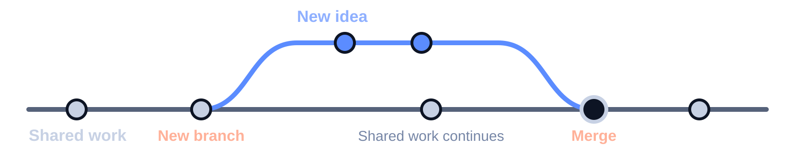

GIT AND GITHUB · 45 MINUTES
Git and GitHub
How we build together. Why and how do we share changes?
Arif Solmaz
İSTÜN Mechatronics Engineering
01 · WHY DO WE NEED THIS?
Changing projects and personal memory
The latest file does not explain how we got here.
- Code changes; the product behaves differently.
- An experiment changes; the explanation of its results changes.
- The team changes; people carrying the knowledge move on.
BENEFIT 1 · PERSONAL MEMORY
Working alone: find your way back
Your future self will work on this project too.
Remember
Revisit what you changed and why.
Compare
Examine the difference between a working state and a new one.
Continue
Use a recorded state as a new starting point.
AN EXAMPLE · FILE COPIES
Which file should we continue from?
A filename does not keep the reason for a change.

As copies multiply, it becomes harder to know which state to trust.
02 · THE BASIC IDEA OF GIT
What does version control record?
Different states of our work and the relationships between them.
- Recorded states
- Changes between those states
- Author details and descriptions of changes
GIT · HISTORY ALONGSIDE YOUR FILES
Git: a tool for project history
Repository: the files and the records that track them.
Project files
The code, text and related files you work on.
Recorded history
Records you can examine to see how the project changed.
You do not need a GitHub account to use Git.
TWO NAMES · TWO DIFFERENT JOBS
GitHub: discuss changes together
A platform for sharing Git repositories and discussing contributions.
Git
Keeps a history of changes on your computer.
GitHub
Provides a shared place to publish, discuss and review contributions.
Git can be used without GitHub; other platforms are available.
GIT'S APPROACH · INDEPENDENCE
Local work and sharing
A local copy of history lets you work without a constant connection.
- Inspect history in your local copy.
- Make new records while offline.
- Share your work to bring it together with other contributions.
MAKE SMALL DECISIONS VISIBLE
Commit: a record with a description
Record a particular state of the project and explain the change.
Recorded state
A particular state of the project is kept.
Description
The purpose of the change becomes visible.
Connection
The record connects to the earlier history.
HISTORY · TRACEABILITY
What does history establish?
It shows what changed. Correctness still needs to be checked.
History shows
Which files changed, how they changed and what description was written.
Also needs checking
Working code, valid measurements and sound decisions.
GIT'S APPROACH · READABLE DECISIONS
Small changes, understandable decisions
A clear purpose makes a record easier to review and build on.
- Keep related changes in the same record.
- Explain why the change was needed as well as what changed.
- Include enough context for a future reader.
GIT'S APPROACH · EXPERIMENT
Branch: a separate path of work
Branch: move in a different direction from the same history.

- An idea develops on a separate branch.
- The team brings it into shared work when it is suitable.
A branch gives an experiment room; its result still needs checking.
GIT'S APPROACH · DECIDE TOGETHER
Merge: bring work together
Merge: bring separate paths into a shared history.
- Independent changes can often merge automatically.
- Competing changes may need a choice.
- No merge conflict does not prove that the system works correctly.
BENEFIT 2 · SHARED WORK
In a team: make progress in parallel
Independent work becomes useful when it leads to shared decisions.
Parallel work
Different tasks can move forward at the same time.
Shared decisions
Evaluate a contribution by its purpose and effects.
Shared memory
Find the discussion alongside the relevant change.
03 · EVERYDAY WORK
How do people use this day to day?
Follow how a need becomes part of the shared project.
- The team explains the need and expected result.
- Someone prepares a change on a separate branch.
- The team reviews the proposal and the evidence.
- The team brings a suitable change into the shared project.
GitHub Flow is one example of this way of working.
GITHUB · MAKE THE NEED VISIBLE
Issue: a need we can discuss
A record for a problem, question or improvement proposal.

An issue is a shared place to discuss and track a problem or proposal.
GITHUB · DISCUSS THE CHANGE
Pull request: propose a change
PR: “Should we bring this work into the shared project?”
Proposal
What changed and why?
Discussion
Questions, comments and requests for revision.
Decision
Bring it in, leave it waiting or close the proposal.
GITHUB · UNDERSTAND THE CONTRIBUTION
Review: a second pair of eyes
Review: understand and evaluate a proposed change.
- Can I understand the purpose and assumptions?
- Does it affect another part of the project?
- Is it clear how the result was checked?
Matplotlib: even where an explanation belongs is discussed together.
QUALITY · DIFFERENT KINDS OF EVIDENCE
History, review and testing do different jobs
They complement one another; each answers a different question.
Review
Does this decision make sense?
Test or experiment
Do we observe the behavior we expected?
04 · WHERE DO PEOPLE USE THIS?
In a student project: a shared hand-in
The team continues from a shared project instead of collecting copies.
- Software, explanations and related text share the same context.
- The hand-in refers to a known recorded state.
- The team can see missing work and proposed improvements.
Commit count does not measure a person's effort or the quality of the work.
RESEARCH · THE METHOD BEHIND THE RESULT
In research: keep a trail of the method
Make clear which code and settings produced a result.
- A recorded state of the analysis code and settings.
- Reasons for changes in the method.
- Information about data, the environment and steps to repeat.
COMPANIES · MAINTAIN A PRODUCT TOGETHER
In a company: share changes with checks
One person's decision can affect the rest of the product.
Different roles
Development, testing, maintenance and product needs.
Shared decisions
Accept changes after considering their effects.
Continuity
Know which state of the product is in use.
OPEN SOURCE · MAKE ROOM FOR CONTRIBUTIONS
In open source: work with people you have never met
Contributing involves more than writing code.
- Reporting problems and improving explanations are contributions too.
- Fork: a related repository copy under your own account.
- Submitting a proposal does not guarantee acceptance.
Arduino Servo: user observation → issue → proposed documentation fix.
BENEFIT 3 · HANDOVER
Hand the project over to the next person
Help the next person find the files and understand the decisions.
- The next person finds the reasons for decisions alongside the files.
- The project depends less on its original contributor being constantly available.
GITHUB · THE READER'S VIEW
README: the entrance to a project
Help a first-time visitor know where to start.
- What does this project do?
- What do I need to get started?
- How can I use or try it?
- Where can I find its limits and get help?
MDN Web Docs: making an explanation clearer is a contribution too.
05 · BENEFITS AND COSTS
Working culture and shared responsibility
Clear reasoning and respectful communication matter alongside the files.
- Make expectations and responsibilities clear.
- Discuss the change rather than criticize the person.
- Keep the reasons behind important decisions.
COST 1 · TIME AND ATTENTION
The cost: learning and keeping records
It may feel slower at first.
Effort today
Learn concepts, write explanations and organize records.
Value later
Understand history, separate changes and continue the work.
COST 2 · THE WORK OF COLLABORATION
The cost: coordination and waiting
Review can improve quality while adding time to the process.
- Comments and revisions take time.
- Separate work may need decisions when it comes together.
- Match the process to team size and project risk.
- Work tracking and automation on the platform also need maintenance.
SHARING · WHO WILL SEE WHAT?
Visibility: set boundaries when sharing
A public repository makes the work visible to everyone.
Value of visibility
People can examine, discover and share the work.
Responsibility when sharing
Respect boundaries for confidential information, personal data and access keys.
Deleting the current file does not automatically erase published history.
SHARING · RIGHTS AND CONDITIONS
Public repositories and licensing
A license explains the terms for reuse.
- Visibility: being able to access the content.
- License: terms for use, modification and distribution.
- Contribution rules: how to take part in the project.
LIMITS · UNDERSTAND THE TOOL'S ROLE
Which problems does Git leave to us?
Keeping history addresses one part of an engineering project.
- Document hardware and the environment separately.
- Large files and CAD may need other methods.
- Use suitable tests and backups alongside history.
Additional storage and tools may add costs.
FIT · START WITH THE NEED
Does every task need the same process?
Choose the tool and process to fit the project.
Value grows
When changes, collaboration, recovery and handover matter.
Keep the process simple
Start with basic records; add suitable rules as the project grows.
SHARED MEMORY FOR SHARED WORK
Three questions for your next project
Rethink how you work before learning every Git feature.
- Which state of our project works?
- Why did we make this change?
- Could someone continue without us?
34 · QUESTIONS · 3 MINUTES
Questions and discussion
Which information gets lost most often in your own work?
- How are Git and GitHub different?
- What is the value when working alone?
- What do we gain and spend when sharing?
APPENDIX 01 · GLOSSARY
Four essential terms
Distinguish the concepts before learning every detail.
- Repository: the tracked project and its history.
- Commit: a particular recorded state with a description.
- Branch: a separate path from the same history.
- Pull request / PR: a proposal to bring changes into shared work.
APPENDIX 02 · A READABLE PROJECT
What can a README answer?
The starting information a first-time reader needs.
- Purpose: what does it do and who is it for?
- Getting started: the environment and preparation required.
- Use: expected results and an example.
- Limits: known problems, help and licensing.
APPENDIX 03 · THE PR DESCRIPTION
A change proposal people can understand
Give the reviewer enough context to make a decision.
- Need: which problem or proposal?
- Change: what was done and what is the scope?
- Checking: what was tried and what was observed?
- Open question: any known limit or pending decision?
APPENDIX 04 · FIT
Choose according to the project's needs
Consider history, collaboration and file types together.
History needs
Do we need to revisit an earlier state or compare changes?
People's needs
Will others work together or take over the project?
File needs
Mostly code and text, or large data and specialized design files?
APPENDIX 05 · WORKING HABITS
Four useful working habits
A routine you can sustain makes the tool more useful.
- Group related changes into readable records.
- Explain the reason for a future reader.
- Review shared changes in proportion to the need.
- Keep the starting instructions current.
APPENDIX 06 · SOURCES
Sources and where to go next
Return to these sources and real projects when you need them.